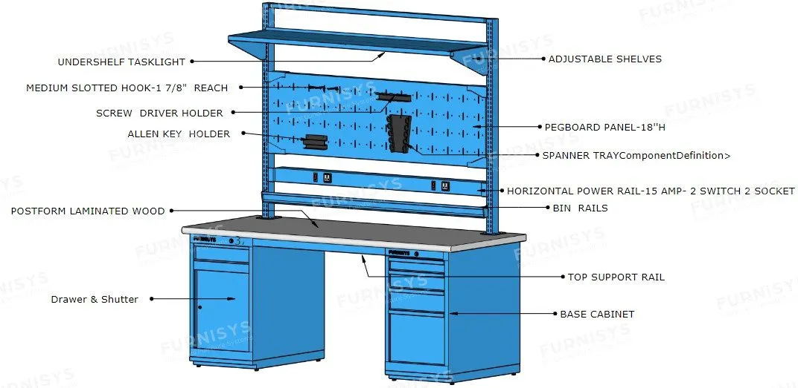

- Industry
- Consumer goods (food, beverages and spirits)
- Application area
- Mechanical maintenance workshop
- Furnisys systems
- Base Cabinets, Link Uprighter
- Engagement
- Product configuration, installation and after-sales service
Pumps keep bottling and processing lines moving
Situation
The client makes spirits, bottles branded liquor, exports processed seafood and supplies aquaculture products. In their mechanical maintenance workshop, technicians repair the gearboxes of pumps used across bottling, cleaning and processing lines.
Heavy gearboxes, delicate mating surfaces
The challenge
The bench had to take 100–200 kg for dismantling, inspection, part replacement and reassembly of gear-driven pumps. The worksurface needed a scratch-resistant rubber cushion to protect mating faces and absorb tool impact. The client also wanted industrial-grade build with a refined look, plus a pegboard, bin storage and an overhead LED light.
How do you protect precision parts on a heavy-duty bench?
The question
How do you build a bench strong enough for gearbox overhauls that still treats impellers, seal housings and bearings gently?
Storage below, tools above, protection on top
The Furnisys approach
1. Base structure and worksurface
Two modular base cabinets support the worktop: one with four drawers for calibrated tools such as torque wrenches, dial indicators and bearing pullers, and one lockable cabinet for larger tools and critical spares like pump shafts and coupling kits. A postform laminated worktop spans both, with a scratch-resistant rubber mat on top.
2. Link Uprighter
- Bin rail for fasteners, circlips, shaft seals, O-rings, keys and coupling bolts
- Horizontal power rail for grinders, pneumatic screwdrivers and sealant dispensers
- Pegboard with spanner tray, screwdriver holder, Allen key holder and medium slotted hooks
- Adjustable overhead shelf for manuals, gasket kits and alignment tools
- Undershelf LED task light for checking gear teeth and measuring backlash

Strip, inspect, rebuild
How the setup works together
Gearboxes are stripped on the rubber-matted top. Small parts go straight into the bins, tools come off the pegboard, and spares and calibrated instruments are in the drawers and cabinet below. The LED light makes wear patterns visible.
What the workshop received
What the configuration enabled
- A bench rated for medium-duty gearbox repair
- A protective surface for machined components
- Secure storage for calibrated tools and critical spares
- Power and shadow-free light at the point of work
Small surfaces, big consequences
Furnisys perspective
A scratched seal face means a leaking pump. Choosing the right top for the job is part of maintenance quality.
Frequently asked questions
What worktop suits gearbox repair?
A durable worktop with a scratch-resistant rubber mat that protects machined faces and absorbs impact from tools.
What storage helps a pump maintenance bench?
Drawers for calibrated tools and a lockable cabinet for larger tools and spares such as pump shafts and coupling kits.
Why fit an LED task light?
Shadow-free light makes it easier to inspect gear teeth and measure backlash accurately.